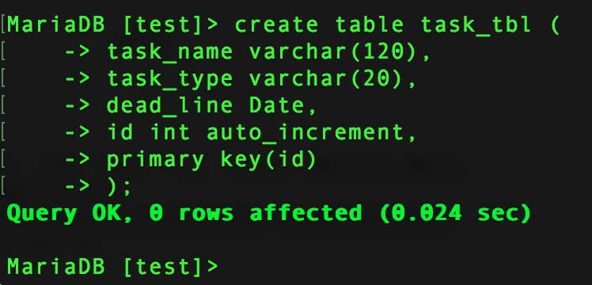
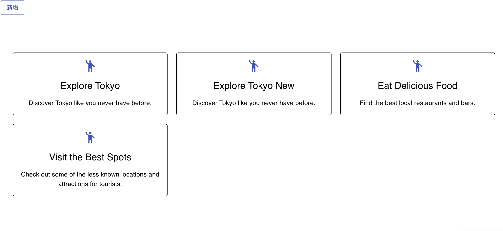

React
使用 react 的 cookie 要使用下面的語法下載：
npm install react-cookie
mac 終端機操作 mysql 位置 -
- /Applications/XAMPP/xamppfiles/bin 資料夾
- 找到 mysql
- show databases; - 顯示資料庫
- use 資料庫名稱; - 使用資料庫
- show table; - 顯示資料庫內之表格
今天問老師才知道，原來 php 的單引號雙引號是不一樣的！（因為 JS 裡大部份都一樣）雙引號可以帶參數，單引號帶參數會變成字串。（主要是因為 php 裡沒有 JS 的 `` 可以使用，所以我好容易看得眼花....）
用終端機 create 表格
下午卡了一個東西卡很久，一直報錯：Too many re renders React limits the number of renders to prevent an infinite loop，但我覺得很疑惑，我明明就什麼都還沒做，一打開網站就狂 loop...真的找了好久，後來才發現是按鈕那邊寫錯了，本來是要寫：{addGrid}，結果我寫成 {addGrid()}…..所以我不用按就會一直 loop！（因為程式碼掃到他了）原來如此，尷尬XDD
開心終於成功了！接下來做點判斷式就可以了。
